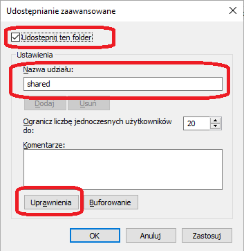
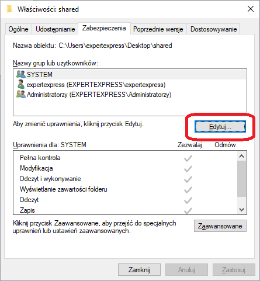
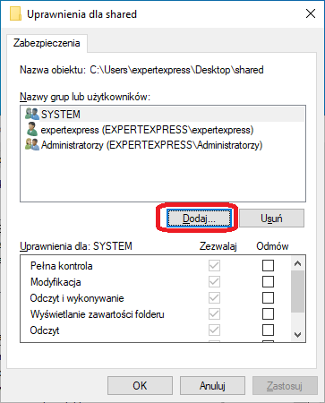
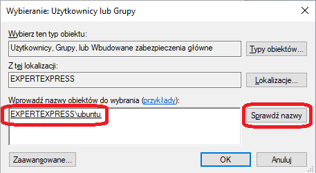
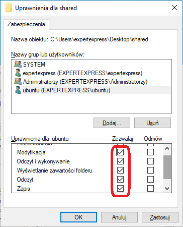
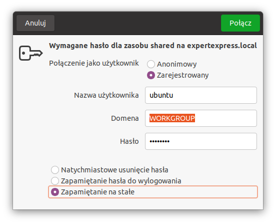
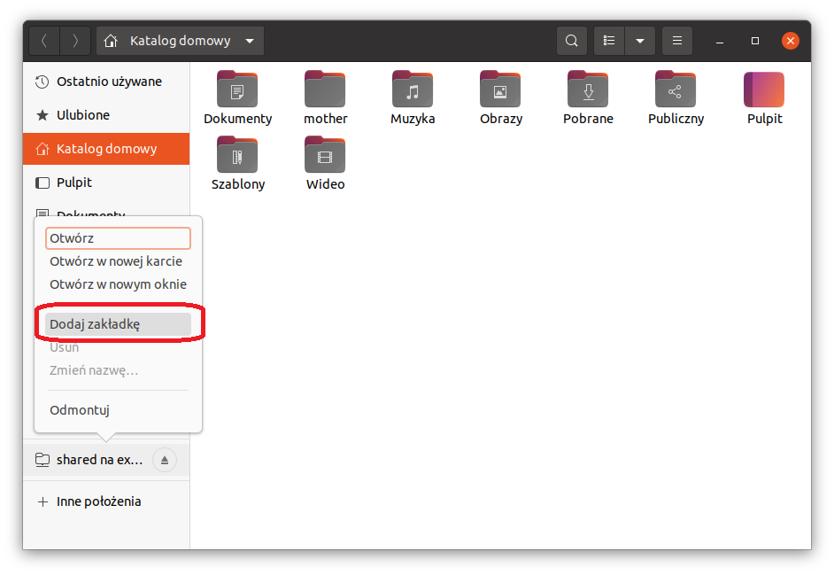

Udostępnianie plików poprzez sieć LAN z systemu Windows 10 na Ubuntu 20.04
Często w artykułach oraz wideo tutorialach na YouTube opisywane są metody udostępniania plików z systemu z rodziny Linux na systemy Windows 7-10. Natomiat kwestia udostępniania
plików z systemu Windows na Linux-a traktowana jest troszeczkę po macoszemu. A jak już coś się znajdzie to wprowadzane są daleko idące komplikacje które początkującego użytkownika
mogą wprowadzić w zakłopotanie i przeświadczenie iż tylko eksperci mogą poradzić sobie z tym zadaniem. Zaczynając od instalacji dodatkowych funkcji w systemie Windows po instalację
pakietów w systemie Linux, wykonywanie skomplikowanych (dla niewtajemniczonych) poleceń w terminalu, każdorazowe mapowanie dysku po restarcie czy też dodawanie zadań do CRON-a.
Ja w tym artykule zaprezentuję w jaki sposób udostępnić pliki na przykładzie systemu Windows 10 i Ubuntu 20.04 bez instalacji dodatkowych pakietów oraz dodatkowej konfiguracji.
Zmapujemy dysk i skonfigurujemy go w taki sposób aby system Ubuntu zapamiętał hasło. Nie twierdzę iż jest to sposób najlepszy, ale mogę zaryzykować stwierdzenie że jest jednym
z najprostszych.
Zapraszam do lektury...
Udostępnienie folderu z systemu Windows 10 na Ubuntu 20.04 jest stosunkowo proste i składa się generalnie z dwóch kroków. Pierwszym z nich jest udostępnienie zasobu i nadanie odpowiednich
uprawnień. Drugim zmapowanie i uwierzytelnienie od strony systemu Linux.
1. W pierwszej kolejności sprawdamy nazwę komputera i grupę roboczą systemu Windows 10. Uruchamiany "Eksplorator Windows", następnie "Ten Komputer" i w wolnym miejscu
klikamy prawym przyciskiem myszy "Właściwości".
Nasz komputer w sieci widnieje pod nazwą "expertexpress" a grupa robocza to "WORKGROUP". Powyższe informacje będą przydatne w późniejszym procesesie konfiguracji.
2. Tworzymy nowe konto standardowego użytkownika. Ten punkt jest opcjonalny, natomiast rozsądnie jest korzystać z dedykowanego użytkownika.
Należy pamiętać aby nie tworzyć użytkownika z prawami administratora, zawsze należy maksymalnie ciąć uprawnienia tam gdzie tylko jest to możliwe oraz korzystać z dedykowanych użytkowników.
Jest wiele sposobów tworzenia nowego użytkownika. My wykonamy to zadania z wykorzystaniem wiersza polecenia gdyż metoda ta działa jednakowo we wszystkich wersjach Windows 10.
Uruchamiamy "Wiersz polecenia" z uprawnieniami administratora i wpisujemy poniższe polecenie.
Polecenie zostało wykonane pomyślnie.
składnia: net user nazwa_użytkownika hasło /add
Oczywiście należy używać silnych haseł np. wygenerowanych przez aplikację KeePassXC. Należy pamiętać iż w tak utworzonym koncie będziemy musieli zmienić hasło po 42 dniach co w konsekwencji
jeśli o tym zapomnimy po prostu zaaowocuje tym iż bez żadnego ostrzeżenia nie będziemy mieli dostępu do naszych udostępnionych zasobów. Dlatego my za wczasu ustawimy opcję niewygasania hasła.
W tym celu logujemy się na nowo utworzonym koncie i uruchamiamy "Wiersz polecenia" z uprawnieniami Administratora i wykonujemy następujące polecenie.
Polecenie zostało wykonane pomyślnie.
3. Tworzymy folder i udostępniamy go w sieci.
W pierwszej kolejności tworzymy nowy folder o nazwie "share", oczywiście nazwa może być dowolna. Klikamy prawym przyciskiem myszy i z menu kontekstowego wybieramy "Właściwości".
Następnie przechodzimy na zakładkę "Udostępnianie" i klikamy opcję "Udostępnianie zaawansowane".

W nowym oknie "Udostępnianie zaawansowane" zaznaczamy "Udostępnij ten folder" oraz w polu "Nazwa udziału" możemy zdefiniować nazwę udziału pod którą będzie widoczna w sieci. Ja
pozostawię tę nazwę bez zmian.

4. Nadajemy odpowiednie uprawnienia sieciowe oraz NTFS (ang. New Technology File System) dla udostępnionego zasobu.
W tym punkcie zaprezentuję jak prawidłowo powinno się nadawać uprawnienia dla udostępnianych zasobów. Najpierw skonfigurujemy uprawnienia sieciowe i nadamy najwyższe uprawnienia dla grupy
"Wszyscy", przez co uprawnienia sieciowe będą niejako "przeźroczyste". Następnie zdefiniujemy faktyczne uprawnienia NTFS w zakładce "Zabezpieczenia".
W oknie "Udostępnianie zaawansowane" wybieramy "Uprawnienia" celem nadania uprawnień sieciowych. Otworzy się nam nowe okno "Uprawniena dla ..." i nadajemy grupie "Wszyscy" uprawnienia:
"Pełna kontrola", "Zmiana" oraz "Odczyt".

Klikamy "Zastosuj" oraz "OK". Wrócimy do okna "Udostępnianie zaawansowane" klikamy "OK" i w oknie "Właściwości" udostępnianego folderu przechodzimy na kartę "Zabezpieczenia" aby nadać
uprawnienia NTFS, czyli faktyczne uprawnienia do folderu. Na karcie "Zabezpieczenia wyświetlona zostanie lista grup oraz użytkowników oraz ich uprawniena. Wybieramy opcję "Edytuj".

W kolejnym oknie mamy możliwość edycji uprawnień oraz dodanie nowych grup oraz użytkowników którzy będą mogli korzystać z udostępnionego zasobu. My wybieramy "Dodaj...".

Teraz należy wpisać nazwę użytkownika który będzie miał uprawnienia do zasobu. Użytkownikem tym będziemy się w dalszym etapie uwierzytelniać od strony systemu Ubuntu.
W naszym przypadku jest to konto o nazwie "ubuntu" i kliknąć "Sprawdź nazwy", pole powinno się uzupełnić automatycznie i klikamy "Ok".

Oczywiście uprawnienia powinno nadawać poprzez grupy a nie użytkownikom aby mieć większą przejrzystość oraz kontrolę nad tym co i komu udostępniliśmy, natomiast dla uproszczenia jak
również na potrzeby zastosowania domowego powyższe rozwiązanie również będzie poprawne.
W oknie "Uprawnienia" dla użytkownika "ubuntu" nadajemy wszystkie uprawnienia oprócz "Pełna kontrola". Uprawnienia te pozwolą nie tylko na wyświetlanie udostępnionych zasobów w systemie
Linux ale również na ich modyfikację dodawanie nowych jak również usuwanie. W tym miejscu możemy zdefiniować poziom uprawnień jaki będzie spełniał nasze oczekiwania.

Klikamy "Zastosuj" i "OK" a następnie "Zamknij" w oknie "Właściwości" folderu. Cała konfiguracja po stronie systemu Windows 10 została zakończona.
5. Mapowanie zasobów po sronie systemu Ubuntu 20.04
W celu dostania się do zasobów udostępnionych w systemie Windows skorzystamby z protokołu SMB (ang. Server Message Block) oraz ścieżki UNC (ang. Universal Naming Convention) prowadzącej do zasobu.
Protokół SMB jest protokołem sieciowego dostępu systemu plików opracowanym przez Microsoft oraz IBM. Co do zasady należy również wspomnieć o protokole CIFS (ang. Common Internet File System)
który jest nową wersją protokołu SMB rozwijaną samodzielnie przez Microsoft. CIFS jest zaimplementowany w Samba 3.0. Uwaga w systemie Windows 10 nie musimy mieć zainstalowanej funkcji
"Obsługa udostępniania plików SMB 1.0/CIFS". Wystarczy więc suchej teori, przystąpmy do działania.
Otwieramy eksplorator plików i wybieramy "+ Inne położenie" następnie w polu "Połącz z serwerem" wpisujemy:

W nowym oknie zmieniamy opcję w polu "Połączenie jako użytkownik" na "Zarejestrowany". W polu "Nazwa użytkownika" wpisujemy nazwę konta w systemie windows za pomocą którego będziemy się
uwierzytelniali. W naszym przypadku jest to konto o nazwie "ubuntu". Następnie w polu Domena wpisujemu nazwę grupy roboczej, a w polu hasło - hasło użytkownika "ubuntu". Na samym dole mamy
możliwość skonfigurowania jak długo w systemie ubuntu będzie przechowywane hasło użytkownika "ubuntu" w systemie Windows. Ja zaznaczam ostatnią opcję czyli "Zapamiętanie na stałe" dzięki
czemu uwierzytelnię się tylko raz.

Ostatnią czynnością jaką należy wykonać jest dodanie do zakładek zmapowanego zasobu. W tym celu klikamy PPM na zmapowanym zasobie i wybieramy opcję "Dodaj zakładkę". Teraz nawet po restarcie
systemu zasób będzie widoczny i gotowy do użycia.

Mam nadzieję drogi czytelniku iż w sposób prosty i obrazowy przedstawiłem jakże użyteczną i podstawową czynność jaką jest udostępnianie plików w sieciach w których występują hosty
z systemem Windows jak i Linux. Nie mniej jednak powyższy sposób można również wykorzystać dla sieci złożonych tylko i wyłącznie z systemów Windows. Różnica polegać będzie w sposobie
mapowania udostępnionego zasobu. Kolejną kwestią jest ilość kont w systemie windows. Gdyż biorąc pod uwagę scenariusz w którym udostępniamy zasób trzem hostom linux za pomocą wspólnego konta
windows i chcielibyśmy zabrać uprawnienia tylko jednemu użytkownikowi musielibyśmy zmienić hasło do konta w systemie windows i poinformować pozostałych dwóch użytkowników iż hasło się zmieniło.
Lepszym rozwiązaniem w powyższym przykładzie będzie założenie osobnych kont w systemie windows dla każdego z użytkowników linux. Wtedy można indywidualnie pozbawić dostępu do zasobów dowolnego
użytkownika lub zmienić poziom jego uprawnień. Prościej systuacja wygląda w środowisku Active Directory ale to już inna historia...